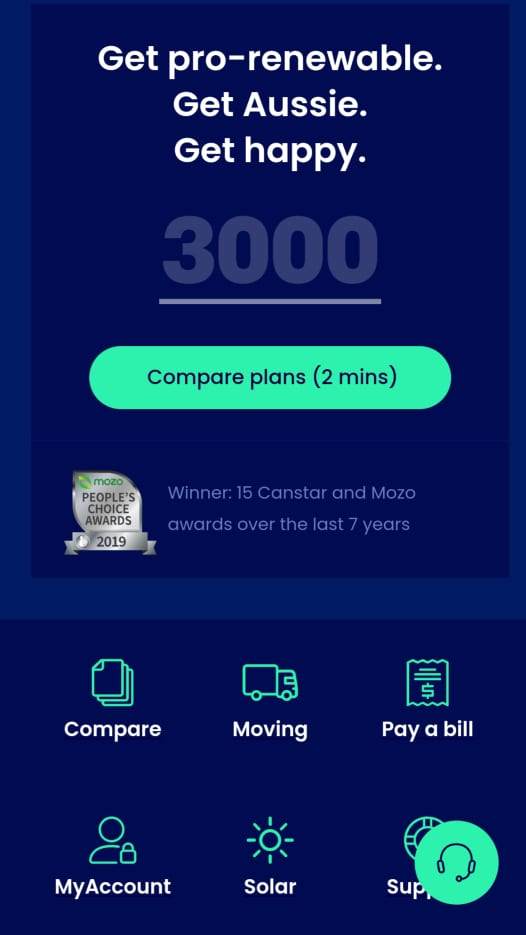
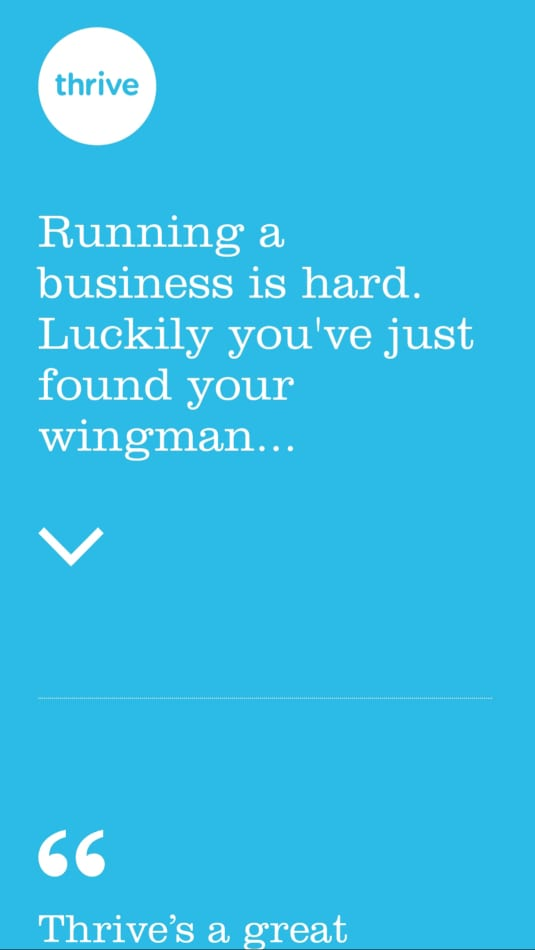

Design Principles Document
Annie Hawley
White Space
Wealth Simple
wealthsimple.com
This website has a lot of white space making it appear simple and clean. It is easy to the eyes since it has not a lot things to see. There are also few texts that describe what the website is all about. It also uses padding on the click button making the “Get Started” stands out. The image is also elegant and fit the description of the website.
Alignment
Momentum energy
momentumenergy.com This website uses alignment effectively across all viewports. In small viewport, the headlines are aligned in the center, whereas in large and medium viewports, they are left-aligned. The top and bottom of the icon menus are also properly aligned with each other. Because of the proper use of alignment, the website looks orderly and easy to read and navigate.
Contrast
Thrive Solo
thrivesolo.com Thrive solo uses a good contrast in color on its website. The background color of blue makes the white texts stand out. The use of only two light colors also gives the website a warm feeling where the reader can focus on what it wants to see on the website.